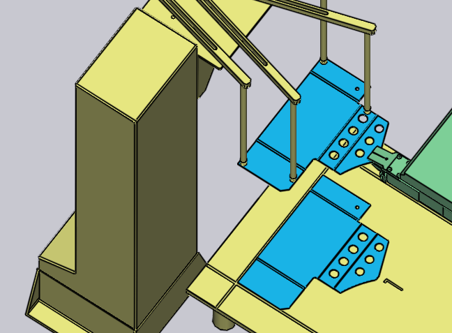

Dağıtıcıdan Alma
Küçük parçalar, TecZone Bend içerisinde çeneli kavrayıcı olarak da bilinen bir mekanik kavrayıcı kullanılarak elleçlenir. Parça yaklaşık olarak A4 ölçüsünden küçükse, TecZone Bend bir çeneli kavrayıcıya otomatik olarak geçiş yapar. Bu kavrayıcı, parçaları yalnızca bir dağıtım istasyonundan (ham sac dağıtıcı olarak da bilinir) alabilir. Parça alma prosesini şu parametreler etkiler:
-
Dağıtıcının makine hücresindeki pozisyonu ve yönü.
-
Parçanın dağıtıcı üzerindeki yönü.
-
Çeneli kavrayıcının parça üzerindeki pozisyonu ve yönü.
Tüm bu ayarları düzenlemek için kullanılan paneller aşağıda gösterilmiştir - bunların hepsi birbirine, mantıklı bir sırayla diğer panellere yönlendirme sağlayan yukarı/aşağı gezinme bağlantıları ile bağlantılandırılmış durumdadır:

Yukarıdaki resimde gösterildiği üzere, simülasyondaki farklı nesnelere tıklayarak da bu panellere kolayca ulaşılabilir:
-
Dağıtıcı panelini açmak için, dağıtıcıya tıklayın.
-
Dağıtıcı üzerindeki parçanın yönünü düzenlemek için, dağıtıcıda bulunan ham sacın üzerine tıklayın (önce, gezinti öğesinde P sütununa tıklayarak mevcut aşamayı Parça Alma olarak ayarlayın).
-
Parça üzerindeki Kavrayıcı tutma pozisyonunu düzenlemek için, kavrayıcıya tıklayın.
Dağıtıcı Paneli
Dağıtıcı panelini açmak için, dağıtıcıya tıklayın. TecZone Bend, parçayı dağıtıcının hizalama köşesine yerleştirir ve emme sistemi kavrayıcı kollarını parçanın köşelerinde konumlandırır. Bu panel aracılığıyla kol konfigürasyonunu ve dağıtıcı konumunu düzenleyebilirsiniz.

-
Pozisyon, Açı ve Kaldır ayarlarını kullanarak, dağıtıcının hücredeki gerçek pozisyonuna uyması için dağıtıcı pozisyonunu ve yönünü ayarlayabilirsiniz.
Emme sistemi konfigürasyonu
Emme sistemi ayarı altında yapılan ayarlar, emme kollarını yapılandırmak amacıyla kullanılır. Bu ayarlar yalnızca gösterge niteliğinde olup NC programında makineye iletilmediği için kritik önem taşımaz. Makine operatörü kollarının manuel olarak ayarlaması gerekecektir (muhtemelen NC programıyla birlikte sağlanan kurulum sayfası yardımıyla).
-
Bir kol seçin ve emiciler parçanın üzerinde pozisyonlanana kadar kolu döndürüp uzatmak için Açı ve Uzunluk ayarlarını düzenleyin.
-
Dağıtıcıya monte edilmiş durumdaki emicileri değiştirmek için Tip ayarını kullanın.
| Kolların açı ve uzunluk konfigürasyonu TecZone Bend tarafından oluşturulan NC programının parçası olmadığı için, kolların birbiriyle çakışma veya kesişme durumunu kontrol etmez. |
Parça Alma Paneli
Parça Alma paneli, parçanın dağıtıcı üzerindeki yönünü ayarlamak için kullanılır. Parçayı döndürdükçe veya çevirdikçe, TecZone Bend tarafından parçayı tutmak için uygun bir düzlem seçilir (kavrayıcı daima yalnızca bir yönden gelebilir). Bu paneli dağıtıcıda bulunan ham saca tıklayarak açabilirsiniz.

-
Parçayı manipüle etme düğmesi, parçayı 90 derece döndürmek için kullanılır. Yukarıdaki resimde parça, dağıtıcının köşesine göre referans almak için ideal bir yönde bulunmamaktadır. Birkaç döndürme faaliyeti sonrasında, daha iyi bir sonuç elde edilir:
 -
Dağıtıcıdaki ham saclar ters çevrilmiş durumdaysa, Parçayı döndür düğmesi aracılığıyla modeli eşleşecek şekilde çevirebilirsiniz:

Herhangi bir Kenarı Hizalama
Bazı durumlarda bu 90° dönüşler yeterli olmayabilir. Hedef kenarı (aşağıda gösterilmiştir) dağıtıcıdaki Z referansıyla hizalamak istediğinizi varsayalım:

Kenarı hizala öğesine tıklayın ve açılan menüden Z yönünde hizalama seçeneğini seçin. Ardından, hedef kenarın yakınındaki kısma tıklayın.Bu kenar artık dağıtıcı referansı ile hizalanmış hale gelir. Sonuç gösterilir below[1], kavrayıcının pozisyonunu ve yönünü bu yeni hizalamaya daha uygun kılmak için ayarlamalar yapıldıktan sonra):
Kavrayıcı Paneli
Kavrayıcı paneli, kavrayıcıyı parça üzerinde konumlandırmak, farklı bir kavrayıcıya geçiş yapmak ve parçayı alırken kavrayıcının dönme ve kayma eksenlerini konfigüre etmek amacıyla kullanılır.

-
Bu makine için sunulan çeneli kavrayıcılar listesinden yeni bir kavrayıcı seçmek için Adı listesini kullanın. Listedeki isimlerde gezinim sırasında, kavrayıcının küçük bir resmi görüntülenir:

-
Pozisyon ve Açı ayarları yardımıyla kavrayıcıyı kavrama düzleminin merkez noktasına göre konumlandırabilir veya yönlendirebilirsiniz. Bu merkez, yukarıdaki resimde çift dairelerle gösterilmiştir. Pozisyonunu ve açısını ayarladıktan sonra aynı kavrayıcının yukarıdan görünümü:

-
Çeneyi döndür ve Taşı düğmeleri, kavrayıcının ekstrüzyon ve kaydırma konfigürasyonunu değiştirmek amacıyla kullanılır. Yukarıdaki ilk konfigürasyondan başlayarak ve aşağıdaki faaliyetler uygulanarak elde edilen sonuçlar:

-
Vakum kavraması kullan düğmesi, parçayı bir vakumlu kavrayıcı kullanımına geçirir. Bu, parçanın tamamen yeniden hesaplanması anlamına gelir. Dağıtıcı artık kullanılmaz ve parça da bunun yerine bir paletten alınır. Büküm sırası, kavrama faaliyetleri ve parça bırakma deseni, vakumlu kavrayıcıya daha uygun olacak şekilde yeniden hesaplanır.
Kavrama Düzlemini Değiştirme
Kavrama yüzeyi seç komutu, parçayı farklı bir düzlemden kavramak için kullanılır. Bu düğmeye tıklayın ve ardından kavrayıcıyı hareket ettirmek istediğiniz düzlemin üzerinden geçin. Bunu yapıyorken, seçildiğini belirtmek için o düzlem üzerine bir çarpı atılır:

Düzleme tıklandığında, kavrayıcı aşağıda görüldüğü gibi o düzleme taşınır. Tipik olarak, Kavrama Düzlemi altındaki bu türde değişiklikler, büküm sırasının değiştirilmesini, kavrama faaliyetlerinde değişiklikler yapılmasını vb. gerektirir.